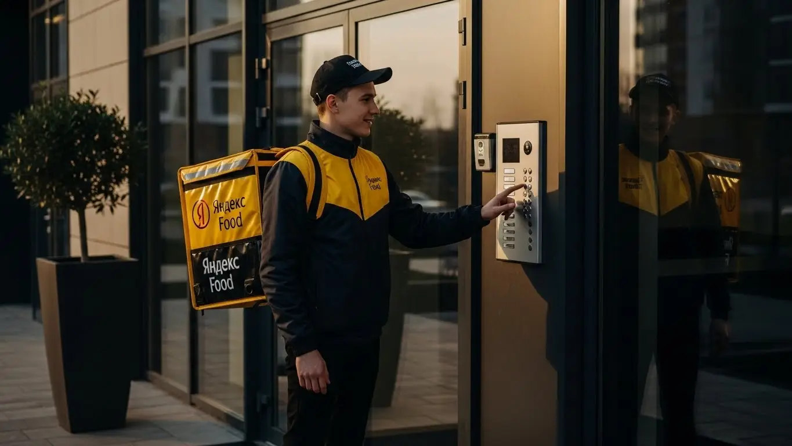

Работа курьером Яндекс Еды в Орехово-Зуево: гид 2025-2026
- Работа курьером Яндекс Еды в Орехово-Зуево: для кого эта вакансия и что вы получите
- Сколько вы будете зарабатывать курьером в Орехово-Зуево: калькулятор дохода и разбор выплат
- Реальный заработок курьера в Орехово-Зуево: смены и месячный доход
- График работы и форматы занятости
- Требования к кандидату и документы
- Самозанятость, налоги и юридическая чистота
- Пошаговое оформление и первый выход на линию в Орехово-Зуево
- Пешком, на вело или на авто: что выгоднее в Орехово-Зуево
- Районы, маршруты и «топовые» зоны заказов в Орехово-Зуево
- Безопасность, страховка, штрафы и оплата простоя
- Плюсы и возможные минусы работы курьером в Орехово-Зуево
- Реальные истории и отзывы курьеров из Орехово-Зуево
- Ответы на главные вопросы о работе курьером Яндекс Еды в Орехово-Зуево
- Короткие ответы на главные вопросы
- Итоги и ваш следующий шаг
Все города
Думаешь податься в курьеры и видишь в рекламе обещания легких денег и свободного графика? А потом представляешь, как стоишь в пробке на Ленина в час пик, убиваешь подвеску на разбитых дорогах окраин или крутишь педали в ледяной дождь, а в итоге — пустой кошелек и штрафы за опоздания? Если да, то ты по адресу. Это не очередной рекламный текст, а честный разбор полетов от своего парня, который знает, что такое работа курьером Яндекс Еды в Орехово-Зуево не по слухам, а по собственным ногам и колесам.
Разница между тем, кто зарабатывает в доставке в Орехово-Зуево стабильные 3–5 тысяч в день, и тем, кто бросает это дело через месяц, — в понимании «внутрянки». Доход — это не просто цифра за заказ в приложении. Это минус бензин или ремонт вела, минус налог самозанятого, минус время, потраченное на пустой обратный путь из какого-нибудь отдаленного СНТ. Большинство новичков в нашем городе наступают на одни и те же грабли: не знают, в каких районах есть спрос, как работает система приоритета и почему один заказ на 500 рублей может быть выгоднее трех по 200. Чтобы сразу оценить условия, посмотреть калькулятор дохода и перейти к анкете, изучите детальную информацию про работу курьером Яндекс Еда в Орехово-Зуево на официальной странице для нашего города.
Здесь мы по-честному разберём, что лучше выбрать для Орехово-Зуево — велосипед, машину или свои двои, и сколько на этом реально можно поднять. Посчитаем чистый доход с учетом всех местных расходов. Я покажу на карте «рыбные» места и «мертвые» зоны, расскажу, как погода и праздники влияют на заработок, и за что на самом деле прилетают штрафы. Сравним условия с другими доставками, которые есть в городе, и посмотрим, что говорят реальные местные ребята-курьеры.
Меня зовут Алексей. Я сам не один год откатал с желтой сумкой по нашему городу, а сейчас держу небольшой таксопарк-партнер и вижу всю эту кухню изнутри. Я знаю, где срезать путь, в какое время лучше не соваться в центр и как общаться с поддержкой, чтобы тебя услышали. Так что пристегивайся (или проверяй давление в шинах), сейчас я разложу по полочкам всё, что нужно знать о работе курьером в Орехово-Зуево, чтобы ты начал зарабатывать, а не разочаровываться.
Прежде чем мы углубимся в детали, вот краткий навигатор по ключевым темам, которые мы разберём.
Что ты точно узнаешь из этого разбора
В этой статье ты ТОЧНО узнаешь:
- Сколько реально можно заработать в Орехово-Зуево за смену на машине, велосипеде или пешком?
- В каких районах Орехово-Зуево больше всего заказов и как ловить «фиолетовые зоны» с повышенной оплатой?
- За что на самом деле штрафуют и как работает бесплатная страховка, если что-то случится на смене?
- Что такое «оплата простоя» и заплатят ли тебе, если заказов в Орехово-Зуево будет мало?
- Как устроена работа самозанятым, сколько платить налогов и сложно ли это оформить?
- Какие слоты и время выбирать, чтобы зарабатывать больше, а уставать меньше?
А если тебе некогда читать всю статью — переходи сразу к заключению, где ты найдёшь короткие ответы на все эти вопросы и указания, в каких разделах искать подробности.
А чтобы сразу увидеть общую картину, вот основные цифры и факты о работе в нашем городе.
Работа курьером в Орехово-Зуево: Ключевые цифры
Работа курьером Яндекс Еды в Орехово-Зуево: для кого эта вакансия и что вы получите
Кому подойдёт эта работа в Орехово-Зуево
Давай начистоту: эта работа не для всех, но для многих она — настоящая находка. В первую очередь, это отличный вариант для студентов, например, из нашего ГГТУ. Можно легко совмещать с учёбой, выходя на пару часов после пар и зарабатывая на свои расходы. График полностью свободный, ты сам решаешь, когда работать.
Также это идеальная подработка для тех, у кого уже есть основная работа, но нужны дополнительные деньги. Вышел в выходные или вечером на несколько часов — вот тебе и прибавка к зарплате. Это отличная вакансия для старта без опыта, всему научат на коротком инструктаже. Если ты водитель, работа курьером на своем авто поможет превратить машину в источник дохода. В общем, если тебе важны гибкость, быстрые ежедневные выплаты и возможность начать зарабатывать сразу — это твой вариант.

Главные преимущества для жителей районов Центральный, Текстильщики, Парковский
Главный плюс работы в Орехово-Зуево — возможность доставлять заказы прямо у своего дома. Тебе не нужно тратить час-полтора на дорогу до «офиса». Живёшь, к примеру, в районе Текстильщики — выбираешь эту зону в приложении «Яндекс Про» и начинаешь смену, как только вышел из подъезда.
Заказы из местных кафе и магазинов от Яндекс Еды будут приходить тебе в первую очередь. То же самое касается и жителей Центрального района или Парковского. Система устроена так, чтобы давать заказы ближайшему курьеру. Это экономит твоё время, силы и деньги на проезд. Ты работаешь на знакомых улицах, знаешь все короткие пути и дворы, что позволяет выполнять доставки быстрее и, соответственно, больше зарабатывать за смену.
Краткое обещание по доходу и условиям
Теперь о деньгах. В Орехово-Зуево реальный заработок курьера зависит от того, как ты работаешь: пешком, на велосипеде или на авто, и сколько часов проводишь на линии. Если говорить о подработке по 3–4 часа в день, можно спокойно делать 1500–2000 рублей. При полной занятости, работая по 8–10 часов, доход автокурьера может доходить и до 4000–5000 рублей за смену. В месяц при стабильной работе зарплата составляет от 40 000 до 80 000 рублей и выше.
Ключевые условия работы просты: свободный график, который ты сам составляешь в приложении, и ежедневные выплаты на карту. Отработал смену — получил деньги. Опыт не нужен, а для старта главное — иметь смартфон на Android и желание работать.
Сколько вы будете зарабатывать курьером в Орехово-Зуево: калькулятор дохода и разбор выплат
Из чего складывается доход курьера
Многие думают, что зарплата курьера — это просто фиксированная плата за заказ. На деле всё сложнее и интереснее. Твой итоговый доход — это сумма нескольких составляющих. Во-первых, есть базовая оплата за сам факт выполнения заказа. Во-вторых, к ней добавляется плата за расстояние — учитывается и путь до ресторана, и путь до клиента. Чем дальше везти, тем больше заплатят.
Кроме того, на заработок влияют повышающие коэффициенты, которые включаются в часы пик (обед, ужин, выходные) и в плохую погоду. Карта в приложении окрашивается в яркие цвета, и стоимость каждого заказа в этой зоне умножается. Есть и персональные бонусы за выполнение определённого числа заказов. Не забывай про чаевые — всё, что оставляет клиент, идёт тебе в карман, сервис не берёт с них комиссию. А ещё есть важная гарантия — оплата простоя. Если ты на плановом слоте, а заказов мало, сервис всё равно начислит минимальную сумму.
Как пользоваться калькулятором дохода
Чтобы прикинуть свой возможный заработок, не нужно гадать. Для этого есть специальный калькулятор. Пользоваться им просто: сначала выбираешь свой город — Орехово-Зуево. Затем указываешь, как планируешь доставлять: как пеший курьер, на велосипеде или на личном автомобиле.
Дальше отмечаешь, сколько часов в день и сколько дней в неделю готов работать. Например, 4 часа 5 дней в неделю. Калькулятор на основе средних данных по городу покажет тебе примерный диапазон дохода за день и за месяц. Это не стопроцентная гарантия, а ориентир, но он даёт вполне реалистичное представление о том, на какие цифры можно рассчитывать.
Прикинь свой возможный доход в Орехово-Зуево
Это ориентир, основанный на средней ставке по городу. Реальный заработок зависит от спроса, бонусов и твоего графика.
Чтобы увидеть более точные цифры и сразу перейти к анкете, загляни на страницу работа курьером Яндекс Еда в твоём городе — там есть все условия и форма для быстрой заявки.
Примеры расчёта для пешего, вело- и авто‑курьера в Орехово-Зуево
Давай разберём на конкретных примерах.
- Пеший курьер-студент. Работает в центре, в районе улицы Ленина, где много кафе. Выходит на 4 часа вечером в будний день. В среднем выполняет 2–3 заказа в час. За смену его доход складывается так: (8 заказов * ~150 руб/заказ) + бонусы за количество + чаевые. Итог: примерно 1300–1600 рублей за вечер.
- Велокурьер на полной занятости. Работает в выходной день 8 часов, катается между спальными районами — Текстильщики и Парковский. За счёт скорости на велосипеде успевает делать 3–4 заказа в час. В пиковые часы ловит повышенный коэффициент. Его заработок за день может составить 3000–3500 рублей.
- Водитель-курьер на своём авто. Выходит на линию на 8–10 часов, берёт заказы по всему городу, включая дальние доставки. В плохую погоду его доход резко возрастает за счёт коэффициентов и большого числа заказов. За такую смену он может заработать 4000–5500 рублей. Из этой суммы нужно вычесть расходы на бензин, но всё равно остаётся прилично.
Как-то раз один из наших водителей в Орехово-Зуево, парень на старенькой «четырке», решил поработать в сильный ливень в субботу. Пока остальные сидели по домам, он катался по всему городу. Спрос был бешеный, коэффициенты горели фиолетовым. За 9 часов он сделал почти 7000 рублей «грязными». После вычета бензина осталось больше 6000. Это к вопросу о том, как погода и правильный момент влияют на заработок.
В итоге, твой доход — это не просто ставка, а результат твоих действий. Понимание, как складываются выплаты, где и когда лучше работать, напрямую влияет на то, сколько денег ты унесёшь домой. Мой совет: не бойся пробовать разные форматы и следи за картой спроса в приложении Яндекс Про — это твой главный инструмент для увеличения заработка.
Реальный заработок курьера в Орехово-Зуево: смены и месячный доход
Давай сразу к главному — к деньгам. Сколько реально можно заработать, если устроиться курьером в Орехово-Зуево? Цифры в рекламе — это одно, а реальность на линии — совсем другое. Твой итоговый заработок — это не просто ставка, а результат твоей стратегии. Он напрямую зависит от того, как ты работаешь (пешком, на велосипеде или на своём авто), сколько часов в день тратишь и, самое главное, как используешь все инструменты для увеличения дохода: бонусы, повышенные коэффициенты в часы пик и, конечно, чаевые.
Поэтому итоговая сумма за день у двух водителей-курьеров на одинаковых машинах может отличаться в полтора-два раза. Из практики: у меня есть парень, водитель-курьер, который начинал с подработки. В первую неделю он выходил только по вечерам на 3-4 часа и сделал около 8 000 рублей. Потом разобрался, в какие зоны ехать в дождь, где всегда есть спрос в обед, и стал выходить на полные смены. Сейчас его стабильный доход в неделю — 20-25 тысяч рублей чистыми, за вычетом бензина и налога для самозанятых. Он не работает сутками, просто грамотно выбирает время и место.

Диапазон дохода для подработки и полной занятости
Давай разберём конкретные цифры для Орехово-Зуево, чтобы ты мог прикинуть, на что рассчитывать. Это средние значения, у кого-то получается больше, у кого-то меньше, но это та база, от которой можно отталкиваться.
Подработка (2–4 часа в день):
- Пеший курьер: Идеально для центра города. За короткую смену можно сделать 600–1200 рублей. В месяц это выливается в 12 000–25 000 рублей, если работать 4-5 дней в неделю.
- Велокурьер: На велосипеде ты мобильнее, поэтому и заказов успеваешь сделать больше. За 3-4 часа выходит 800–1500 рублей. Месячный доход при таком графике — 16 000–30 000 рублей.
- Водитель-курьер: Самый высокий доход. За вечернюю подработку на своем авто можно заработать 1200–2500 рублей. Это отличный дополнительный доход к основной зарплате, в месяц выходит 25 000–45 000 рублей. Но не забывай вычитать расходы на топливо.
Полная занятость (8–10 часов в день):
- Пеший курьер: Если работать полный день, можно рассчитывать на 1800–2500 рублей за смену. В месяц это уже серьёзные 40 000–55 000 рублей.
- Велокурьер: За полную смену выходит 2200–3500 рублей. В месяц это 50 000–70 000 рублей. Отличный вариант для тех, кто в хорошей физической форме.
- Водитель-курьер: Здесь цифры самые интересные. 3000–5000 рублей в день — это реальность для курьера на автомобиле. В месяц при полной занятости можно выходить на 70 000–100 000 рублей и даже больше, особенно в хороший сезон.
Как район, время суток и погода влияют на доход
Запомни три главных фактора, которые напрямую влияют на твой кошелёк: место, время и погода. Если научишься их использовать, будешь зарабатывать больше, а уставать меньше. Система работает по принципу спроса и предложения: где больше заказов и меньше курьеров, там выше оплата. В приложении «Яндекс Про» такие зоны подсвечиваются фиолетовым цветом — это сигнал, что там сейчас «дорого».
Время суток — это основа. Пиковые часы в Орехово-Зуево стандартные: обед (с 12:00 до 14:00) и ужин (с 18:00 до 21:00). В это время коэффициенты могут взлетать в 1.5-2 раза. Пятница вечер и все выходные — это один большой пик. Районы тоже играют роль. В центре, на улице Ленина и вокруг ТЦ «Капитолий», всегда много заказов из ресторанов в Яндекс Еде. А вечером спрос смещается в спальные районы — Вокзальный, Парковый, Текстильщики.
Погода — твой лучший друг. Как только начинается дождь, снег или сильная жара, большинство людей предпочитают заказать доставку, а часть курьеров решает остаться дома. В итоге заказов море, исполнителей мало — коэффициенты и чаевые растут. В сильный ливень можно за час заработать столько же, сколько за три часа в ясную погоду.
Советы по увеличению заработка от опытных курьеров
Чтобы не просто работать, а именно зарабатывать, нужно подходить к делу с умом. Вот несколько проверенных советов, которые помогут тебе выжимать максимум из каждой смены без лишних переработок.
Во-первых, планируй свои смены. Не выходи на линию хаотично. Если у тебя есть всего 4 часа, лучше взять слот в пятницу вечером, чем в понедельник днём. Эффективность будет в разы выше. Всегда смотри на карту спроса в «Яндекс Про» перед выходом. Если видишь, что в твоём районе тихо, а в соседнем всё «горит» фиолетовым — не ленись, доберись туда. 15 минут в пути окупятся первым же «дорогим» заказом.
Во-вторых, будь мультимодальным, если есть возможность. Например, если у тебя есть и велосипед, и машина. В час пик в центре Орехово-Зуево, где всё стоит в пробках, велосипед будет быстрее и выгоднее. А для дальних заказов в пригород или в плохую погоду лучше использовать автомобиль. Умение переключаться между видами транспорта — это прямой путь к увеличению дохода. И, конечно, поддерживай высокий рейтинг: будь вежлив, опрятен и пунктуален. Система всегда отдаёт приоритет курьерам с хорошими показателями.
Сравнение среднего дохода в Орехово-Зуево
| Параметр | Пеший курьер | Велокурьер | Водитель-курьер |
|---|---|---|---|
| Доход за подработку (3-4 часа) | 600 – 1 200 ₽ | 800 – 1 500 ₽ | 1 200 – 2 500 ₽ |
| Доход за полную смену (8-10 часов) | 1 800 – 2 500 ₽ | 2 200 – 3 500 ₽ | 3 000 – 5 000 ₽ |
| Примерный месячный доход (полная занятость) | 40 000 – 55 000 ₽ | 50 000 – 70 000 ₽ | 70 000 – 100 000 ₽ |
В итоге, твой заработок в Орехово-Зуево напрямую зависит от твоей стратегии. Можно просто кататься по городу в ожидании заказов, а можно анализировать спрос, ловить пиковые часы и непогоду. Мой совет: в первый месяц пробуй работать в разное время и в разных районах, чтобы понять, где и когда выгоднее всего.
График работы и форматы занятости
Одно из главных преимуществ работы курьером в Яндексе — это гибкий график. Ты сам себе начальник и сам решаешь, когда и сколько работать. Никто не будет стоять над душой с восьми до пяти. Эта свобода позволяет легко совмещать доставку с учёбой, другим бизнесом или просто жить в удобном для себя ритме.
По сути, есть два основных формата занятости. Первый — это плановые слоты. Ты заранее выбираешь в приложении «Яндекс Про» удобный временной интервал и район. Плюс таких слотов в том, что часто на них действует гарантированный минимальный доход. Даже если заказов будет мало, сервис доплатит тебе до определённой суммы. Второй формат — свободный выход. Просто нажимаешь кнопку «На линию» в любой момент и начинаешь получать заказы. Это даёт максимальную свободу, но без гарантий минимального заработка.
Из практики: у меня есть знакомый студент, который учится в ГГТУ. Он работает велокурьером. В будни выходит на 3-4 часа вечером после пар, а в субботу берёт полный 8-часовой слот. В среднем у него выходит около 15-18 тысяч в месяц. Этих денег ему с лихвой хватает на личные расходы, и при этом он не пропускает учёбу. График он планирует сам через приложение, подстраивая его под расписание занятий и экзаменов.

Подработка после учёбы или основной работы
Совмещать доставку с чем-то ещё — это самый популярный сценарий. Для студентов и тех, у кого есть основная работа, это идеальный вариант получить дополнительный доход без жёстких обязательств.
Вот пара реальных примеров. Первый — студент, который живёт в районе Карболит. Он выходит на велосипеде после учёбы, примерно в 17:00, и работает до 21:00. Он катается по своему и соседним районам, доставляя в основном ужины из кафе и продукты из магазинов. За такой вечер у него выходит 1000–1400 рублей. В выходные он может взять смену подлиннее и заработать больше.
Второй пример — менеджер, который работает в офисе 5/2. У него есть машина. Чтобы быстрее закрыть кредит, он три-четыре раза в неделю после работы выходит на линию как водитель-курьер в Яндекс Доставке. Он берёт плановые слоты с 19:00 до 23:00, когда спрос максимальный. За счёт скорости автомобиля и «дорогих» вечерних заказов он дополнительно зарабатывает 25 000–30 000 рублей в месяц, что является отличной прибавкой к его основной зарплате.
Полная занятость: как выглядит типичный день курьера
Если рассматривать доставку как основную работу, то день строится вокруг пиков спроса. Типичный день курьера на полной занятости в Орехово-Зуево выглядит примерно так. Он выходит на линию около 10-11 утра, чтобы захватить утренние заказы из Яндекс Лавки, магазинов и первые обеденные из ресторанов. Работает в центре, где много офисов и кафе. С 12:00 до 15:00 — самый плотный поток заказов, практически без перерывов.
После обеденного пика, примерно с 15:00 до 17:00, наступает затишье. Это время можно использовать для отдыха, обеда или выполнения дальних, но не срочных заказов. А с 18:00 начинается второй, вечерний пик, который длится до 21:00-22:00. В это время курьер смещается в густонаселённые спальные районы, развозя ужины. После 22:00 поток заказов спадает, и можно либо завершать смену, либо выполнять редкие ночные заказы, которые обычно хорошо оплачиваются.
Как планировать слоты и выходы через приложение «Яндекс Про»
Приложение «Яндекс Про» — твой главный рабочий инструмент. Именно через него ты управляешь своим графиком. В разделе «Расписание» ты можешь видеть доступные плановые слоты на несколько дней вперёд. Они разделены по районам и времени. Советую бронировать самые выгодные (вечерние и выходные) заранее, так как их быстро разбирают.
Планирование слотов помогает не только выстроить график, но и обеспечить себе стабильный доход, так как на многие из них действуют выгодные условия и минимальная гарантированная оплата. Самое важное — не опаздывать на начало забронированного слота. Система отслеживает твою пунктуальность, и регулярные опоздания негативно сказываются на твоём рейтинге. А высокий рейтинг — это приоритет в распределении заказов. Поэтому относись к плановым слотам серьёзно: это твоя договорённость с сервисом, которая выгодна вам обоим.
В итоге, гибкость графика — это не просто слова. Ты действительно можешь выстроить работу так, как удобно именно тебе, будь то пара часов в день или полноценная рабочая неделя. Главное — использовать инструменты планирования в «Яндекс Про» с умом и быть дисциплинированным, чтобы система видела в тебе надёжного партнёра.
Требования к кандидату и документы
Многие думают, что для работы курьером в Яндекс Еде нужны особые навыки или кипа бумаг. На деле всё гораздо проще. Условия работы специально продуманы так, чтобы ты мог быстро начать доставлять заказы без опыта и долгой бюрократии. Главное — соответствовать базовым требованиям и иметь под рукой стандартный набор документов.
Возраст, гражданство и базовые условия
Начнём с основ. Чтобы стать курьером Яндекс Еды, тебе должно быть полных 18 лет — это строгое правило, связанное с юридической ответственностью. Исключений здесь нет. По гражданству тоже всё чётко: нужен паспорт РФ или одной из стран ЕАЭС (Беларусь, Казахстан, Армения, Киргизия).
Что касается физической формы, то олимпийских рекордов не требуется. Если ты пеший курьер или велокурьер, будь готов проводить на ногах несколько часов и переносить термокороб весом до 10–15 кг. Для курьера на автомобиле главное — уверенно водить и хорошо ориентироваться в Орехово-Зуево. В целом, если у тебя нет серьёзных противопоказаний к умеренной физической нагрузке, ты справишься.
Какие документы нужны для работы курьером
Чтобы всё прошло гладко, подготовь документы заранее. Список короткий, и ничего экзотического в нём нет. Вот что тебе понадобится:
- Паспорт. Основной документ для подтверждения личности и возраста. Нужен оригинал для регистрации.
- ИНН (Идентификационный номер налогоплательщика). Необходим для оформления самозанятости и уплаты налогов. Если не помнишь свой номер, его можно за пару минут бесплатно узнать на сайте ФНС по паспортным данным.
- Банковская карта. Нужна личная дебетовая карта любого российского банка, на которую будут приходить выплаты. Важно, чтобы она была оформлена именно на твоё имя.
- Медицинская книжка. Для доставки заказов из ресторанов и кафе она обязательна — это требование закона для всех, кто работает с продуктами питания. Если у тебя её нет, можно оформить в любой поликлинике Орехово-Зуево, которая предоставляет такие услуги. Лучше сделать это заранее, чтобы сразу получить доступ ко всем типам заказов.
Как видишь, ничего сложного. Это стандартный пакет документов для официального оформления на подработку.
Можно ли работать с 16 лет и какие есть альтернативы
Часто спрашивают, можно ли устроиться курьером в 16 или 17 лет. Отвечаю честно: в Яндекс Еду — нельзя. Работа строго с 18 лет. Это связано с тем, что курьеры сотрудничают с сервисом как самозанятые, а этот статус в полной мере доступен именно с совершеннолетия. Плюс, работа предполагает материальную ответственность за заказы, что также усложняет трудоустройство несовершеннолетних.
Какие есть альтернативы для подростков в Орехово-Зуево? Можно поискать подработку промоутером или раздавать листовки — туда часто берут с 16 лет. Иногда местные кафе и магазины ищут помощников на лето. Но если говорить именно о работе в крупных сервисах доставки, придётся дождаться 18-летия.
У меня был знакомый студент-первокурсник, который пытался устроиться курьером в 17, но везде получал отказ. Он думал, что собрать все документы — целая история. В итоге, как только ему исполнилось 18, он за минуту нашёл свой ИНН на Госуслугах, сфотографировал паспорт, и вся регистрация заняла от силы полчаса. Единственное, что заняло время, — оформление медкнижки. Но уже через три дня после своего дня рождения он вышел на первый слот и получил первый доход.
В общем, требования к кандидатам и список документов вполне стандартные. Главное — быть совершеннолетним и иметь гражданство РФ или ЕАЭС. Мой совет: перед тем как заполнять анкету, чтобы стать курьером, проверь, все ли документы у тебя на руках, и уточни свой ИНН онлайн. Так ты не будешь тратить на это время потом.
Самозанятость, налоги и юридическая чистота
Слова «самозанятость» и «налоги» многих новичков пугают. Кажется, что это сложно и связано с бумажной волокитой. На самом деле, всё наоборот. Статус самозанятого (или плательщика НПД — налога на профессиональный доход) — это самый простой и прозрачный способ легально работать и получать доход от таких компаний, как Яндекс. Давай разберёмся, как это устроено.
Почему курьеры Яндекс Еды работают как самозанятые
Яндекс не нанимает курьеров в штат по трудовому договору, а сотрудничает с ними как с партнёрами — самозанятыми. Это выгодно обеим сторонам. Для тебя как для курьера это означает полную свободу: ты сам решаешь, когда и сколько работать, у тебя нет начальника и жёсткого графика.
Главные плюсы самозанятости:
- Официальный доход. Все твои заработки — «белые». Ты можешь взять кредит или подтвердить доход для любых других целей.
- Простота. Никакой бухгалтерии, деклараций и походов в налоговую. Всё делается автоматически через приложение.
- Низкий налог. Ставка налога — одна из самых низких в стране.
- Легальность. Ты работаешь в рамках закона, спокойно платишь налоги и ничем не рискуешь. Это гораздо безопаснее, чем получать деньги «в конверте».
По сути, самозанятость — это официальный статус для фрилансера, который позволяет честно работать на себя и не иметь проблем с государством.
Как за 10 минут оформить самозанятость через «Мой налог»
Регистрация занимает несколько минут и делается полностью онлайн. Тебе не нужно никуда идти. Вот простая пошаговая инструкция:
- Скачай приложение. Найди в Google Play или App Store официальное приложение ФНС «Мой налог» и установи его на смартфон.
- Начни регистрацию. Открой приложение и выбери способ регистрации. Самый быстрый — по паспорту РФ.
- Отсканируй паспорт. Наведи камеру телефона на главный разворот паспорта. Приложение само распознает все данные.
- Сделай селфи. Приложение попросит тебя сфотографироваться, чтобы подтвердить твою личность.
- Подтверди данные. Проверь информацию, выбери свой регион (для Орехово-Зуево это Московская область) и подтверди регистрацию.
Вот и всё. Через несколько минут ты получишь официальный статус для работы и уведомление о регистрации в качестве плательщика НПД. Весь процесс интуитивно понятен и не требует специальных знаний.
Сколько и как платить налоги
Теперь о самом главном — о деньгах. Ставка налога для самозанятого, который работает с юридическими лицами (а Яндекс — это юрлицо), составляет 6% от дохода. Не 13%, как НДФЛ, а именно 6%.
Процесс уплаты налога максимально автоматизирован, тебе не нужно ничего считать самому:
- Яндекс передаёт данные о твоих выплатах в налоговую.
- В приложении «Мой налог» автоматически формируются чеки на каждую полученную сумму.
- До 12-го числа каждого месяца приложение само рассчитывает налог за предыдущий месяц.
- Тебе приходит уведомление с суммой к уплате, которую нужно внести до 28-го числа. Оплатить можно прямо в приложении, привязав банковскую карту.
Это намного проще и безопаснее, чем работать неофициально. За «серый» кэш можно получить штрафы, а здесь ты платишь небольшой, понятный налог и спишь спокойно.
У меня есть знакомый из Орехово-Зуево, мужчина лет 45, который всю жизнь работал на стройках за наличку. Когда он решил стать курьером, больше всего боялся именно налогов. Думал, что его обдерут как липку. Я лично показал ему, как установить приложение «Мой налог», и он зарегистрировался за пять минут, пока мы пили кофе. Через месяц пришёл первый налог — около 2500 рублей с его заработка. Он даже удивился, что так мало, и теперь говорит, что впервые в жизни работает спокойно, зная, что его доход полностью официальный.
В итоге, самозанятость — это не проблема, а удобный инструмент для работы курьером. Этот статус даёт тебе официальный доход и минимальный налог при полной автоматизации. Мой совет: не ищи сложностей там, где их нет. Просто следуй инструкции, и через 10 минут у тебя будет всё необходимое для легальной подработки.
Пошаговое оформление и первый выход на линию в Орехово-Зуево
Многие думают, что устроиться курьером — это долго и муторно, с кучей бумажек и собеседований. На деле всё гораздо проще, особенно если нужна подработка без опыта в Яндекс Еде. Весь процесс отлажен и проходит онлайн, так что ты можешь получить первый доход буквально на следующий день. Главное — следовать понятным шагам, которые система сама тебе подскажет.
Процедура специально сделана так, чтобы убрать лишние барьеры. Никто не будет гонять тебя по офисам и заставлять ждать неделями. Заполнил анкету, прошёл короткое обучение, получил термокороб — и вперёд, на линию. Это не сложнее, чем зарегистрироваться в новой соцсети.
Шаг 1–2: анкета и онлайн‑обучение
Всё начинается с простой анкеты на сайте — это первый шаг, чтобы стать курьером. От тебя потребуются базовые данные: ФИО, номер телефона и город — Орехово-Зуево. Никаких эссе писать не нужно. После отправки анкеты твои данные проходят быструю автоматическую проверку, которая занимает от нескольких минут до пары часов.
Как только проверка пройдена, тебе откроется доступ к короткому онлайн-обучению. Это не лекции, а несколько понятных видео и инструкций. Там расскажут, как пользоваться приложением «Яндекс Про», общаться с клиентами и представителями ресторанов, а также напомнят об основных правилах. В конце будет небольшой тест, чтобы убедиться, что ты всё понял. Справится любой, кто слушал внимательно.
Шаг 3: получение сумки и доступа к заказам в Орехово-Зуево
После успешного теста ты получаешь доступ к приложению «Яндекс Про», но для выхода на линию не хватает главного — фирменного термокороба. Термосумка нужна, чтобы заказы из ресторанов и магазинов доезжали до клиента в правильной температуре. Это стандарт качества сервисов Яндекс Еда и Яндекс Доставка, и без неё работать нельзя.
Получить экипировку можно несколькими способами, чаще всего — в курьерских центрах или офисах партнёров. Точный адрес ближайшей точки выдачи появится прямо в приложении, так что искать ничего не придётся. Иногда возможна даже доставка термокороба на дом. Получил его — считай, ты готов к работе.
Шаг 4: первый слот и первый доход
Теперь у тебя есть всё, чтобы заработать. Работа курьером строится по слотам — это запланированные промежутки времени для выполнения заказов. Ты сам выбираешь удобные слоты в «Яндекс Про», реализуя главное преимущество — свободный график. Можно взять короткий слот на 2–3 часа или длинный на 8–10.
Для первого раза советую выбрать знакомый район в Орехово-Зуево, например, тот, где живёшь. Так будет спокойнее. Выбираешь слот, выходишь на линию, и приложение начинает присылать заказы. Принял первый, доставил — и вот, первый доход уже на балансе. Одно из удобств — частые выплаты, так что заработанное можно быстро получить на карту.
Из практики: студент из нашего парка искал подработку. Утром заполнил анкету, к обеду прошёл обучение. После пар заехал в офис, забрал термокороб. Вечером в тот же день вышел на 4-часовой слот в своём районе на Карболите, выполнил 7 заказов и его заработок составил около 1400 рублей. Говорит, не ожидал, что всё будет так быстро.
В итоге, весь процесс от анкеты до первого заработка занимает минимум времени. Условия работы понятные, а система рассчитана на то, чтобы ты как можно скорее начал получать доход. Главный совет — не откладывай, а просто пройди эти четыре шага.
Пешком, на вело или на авто: что выгоднее в Орехово-Зуево
Выбор способа передвижения — ключевое решение, которое напрямую влияет на твой доход и комфорт. В Орехово-Зуево у каждого варианта есть свои плюсы и минусы. Важно трезво оценить свои возможности, район, в котором планируешь работать, и то, чего ты ждёшь от этой работы — максимальной зарплаты или удобной подработки.
Кто-то хочет совместить работу с фитнесом, и для него идеален велосипед. Другому важен комфорт и возможность брать дальние заказы, тогда лучше выбрать авто. А для студента, живущего в центре, оптимальным вариантом может стать пешая доставка. Давай разберёмся в условиях для каждого формата применительно к нашему городу.
Пеший курьер: для центра и плотной застройки в Орехово-Зуево
Если планируешь работать в центре города, формат пешего курьера — отличный выбор. В районах с плотной застройкой, например, вдоль улицы Ленина или около Центрального бульвара, заказов всегда много, а расстояния небольшие, часто в пределах 1–2 километров. Здесь пеший курьер легко обгонит автомобиль, который будет стоять в пробке или искать парковку.
Главные плюсы — нулевые расходы на транспорт и полная свобода передвижения. Ты можешь срезать путь через дворы и парки, куда транспорту въезд запрещён. Этот формат идеально подходит для подработки на несколько часов в день, особенно в обеденное и вечернее время, когда в центре пик заказов.
Велокурьер: быстрые доставки между спальными районами
Велосипед — это золотая середина. Как велокурьер, ты уже не зависишь от коротких дистанций, но всё ещё не стоишь в пробках, как водитель. Для Орехово-Зуево, где нужно быстро перемещаться между спальными районами, например, с Карболита на Парковскую или в район Крутое, велосипед подходит идеально. Он позволяет оперативно покрывать расстояния в 3–5 км, что расширяет географию твоих заказов.
Кроме скорости, у велокурьеров есть ещё один плюс — это, по сути, оплачиваемый фитнес. Ты поддерживаешь себя в форме и при этом зарабатываешь. Расходов минимум — только на обслуживание велосипеда. Это отличный вариант для тех, кто хочет работать полный день и максимизировать свой доход без затрат на топливо.
Водитель‑курьер: заказы по всему городу и пригороду Ликино-Дулёво, Дрезна
Работа курьером на своем авто открывает доступ к самым выгодным заказам. Это доставка на дальние расстояния, в том числе в пригороды Орехово-Зуево, такие как Ликино-Дулёво, Дрезна или Куровское. На машине удобно выполнять крупные заказы из Яндекс Маркета и гипермаркетов, которые пешком или на велосипеде не унести. Водитель-курьер — король плохой погоды: в дождь или снег количество заказов и коэффициенты на них растут, пока остальные пережидают ненастье.
Конечно, у работы на авто есть расходы: топливо, амортизация. Но высокий потенциальный доход их с лихвой перекрывает. Если у тебя есть машина и ты хочешь сделать доставку основным источником заработка, это самый выгодный вариант. Ты не привязан к одному району и можешь работать по всему городу, выезжая туда, где в данный момент самый высокий спрос.
Сравнение форматов доставки в Орехово-Зуево
| Параметр | Пеший курьер | Велокурьер | Водитель-курьер |
|---|---|---|---|
| Оптимальные районы | Центр, плотная застройка (ул. Ленина) | Спальные районы (Карболит, Парковская) | Весь город и пригороды (Ликино-Дулёво, Дрезна) |
| Средняя дистанция заказа | 1–2 км | 2–5 км | 5+ км |
| Потенциал дохода | Средний | Высокий | Максимальный |
| Расходы | Практически нет | Минимальные (обслуживание) | Существенные (топливо, амортизация) |
| Главные плюсы | Нет затрат, можно срезать путь | Скорость, манёвренность, фитнес | Комфорт, большие заказы, работа в любую погоду |
Из практики: у нас в парке есть водитель-курьер, который выходит на линию только по вечерам и в выходные. Он отслеживает зоны с повышенным спросом на окраинах и в пригородах. В прошлую субботу, когда лил дождь, он за 6-часовой слот заработал почти 5000 рублей, выполняя дальние заказы с высокими коэффициентами. Говорит, что в такую погоду пешие и велокурьеры почти не работают, и все «сливки» достаются ему.
В итоге, идеального варианта для всех не существует. Выбор зависит от твоих целей, наличия транспорта и района проживания. Мой совет: начни с того, что у тебя уже есть. Если есть велосипед — пробуй на нём. Если нет — начни пешком в центре. В приложении «Яндекс Про» всегда можно сменить способ доставки, так что ты ничем не рискуешь.
Районы, маршруты и «топовые» зоны заказов в Орехово-Зуево
Чтобы работа курьером в Орехово-Зуево приносила хороший заработок, а не только пользу для здоровья, нужно понимать карту города. Важно знать, где «рыбные места», а где можно просидеть час без единого заказа. Город у нас не Москва, но свои центры притяжения есть, и на них нужно ориентироваться, чтобы доход был стабильным.
Где больше всего заказов: ТРЦ, бизнес‑центры и туристические места
Самые выгодные заказы, конечно, в центре. Основные точки притяжения — это крупные торговые центры, в первую очередь «Капитолий» и «Орех» на улице Ленина. Вокруг них сосредоточено множество кафе и ресторанов, откуда поступает большинство заказов Яндекс Еды. В обеденное время (с 12:00 до 15:00) и вечером (с 18:00 до 21:00) здесь постоянно горят фиолетовые зоны в приложении «Яндекс Про», а это значит — повышенные коэффициенты к стоимости доставки.
Кроме того, стабильный поток идёт из центрального района в целом — улица Ленина, Октябрьская площадь. Здесь и офисы, и административные здания, и просто много людей. В выходные и праздничные дни эти зоны тоже работают на полную мощность. Если ты на машине или шустрый на велосипеде, держаться в этом квадрате — самая выгодная стратегия. Заказы короткие, их много, а доплаты делают кассу.
Работа в своём районе: примеры для популярных жилых кварталов
Не все хотят или могут постоянно работать в центре. И это нормально, ведь стабильный доход можно получать и в своём районе. Если ты живёшь, например, в районе Парка Победы или в микрорайоне Карболит, у тебя под боком тоже хватает заказов. Здесь нет таких пиковых коэффициентов, как в центре, зато есть постоянный поток доставок из продуктовых магазинов — «Пятёрочка», «Магнит», «ВкусВилл», а также из местных суши-баров и пиццерий.
Преимущество работы в спальном районе в том, что ты знаешь каждую тропинку и двор. Это экономит время, нервы и топливо, если ты водитель-курьер. Заказы здесь часто идут по цепочке: отвёз один, и тут же прилетает следующий из соседнего дома. Для пешего курьера или велокурьера это идеальный вариант для неспешной подработки. Меньше суеты, а заработок капает ровно и предсказуемо.
Как выбирать зоны и слоты в «Яндекс Про», чтобы не мотаться впустую
Приложение «Яндекс Про» — твой главный инструмент. Ключевой элемент в нём — карта спроса. Зоны, подсвеченные разными оттенками фиолетового, показывают, где сейчас больше всего заказов и действуют повышающие коэффициенты. Перед началом смены или просто выходом на линию всегда смотри на эту карту. Если ты видишь, что в твоём районе тихо, а в соседнем «горит» — есть смысл сместиться туда.
Планируй свои смены (слоты) заранее. Когда ты выбираешь плановый слот в определённой зоне, сервис часто предлагает минимальную гарантированную сумму дохода. Это твоя страховка на случай, если заказов будет мало. Но не гоняйся за каждым «фиолетовым пятном» через весь город. Иногда выгоднее отработать 3-4 заказа в спокойной зоне, чем потратить 30 минут и бензин на поездку в зону с высоким «кэфом», который может пропасть, пока ты доедешь. Ищи баланс.
Из практики: один из моих водителей-курьеров в прошлую пятницу не стал распыляться, а просто работал на машине в районе ТРЦ «Орех». За 4 вечерних часа он выполнил 12 заказов с хорошими коэффициентами, почти не выезжая из центрального квадрата, и его заработок составил около 2800 рублей. Другой новичок в это же время мотался между спальными районами и привёз только 1800. Концентрация на точках с высоким спросом в пиковое время напрямую влияет на итоговый доход.
Сравнение рабочих зон в Орехово-Зуево
| Параметр | Центр (ТРЦ «Капитолий», «Орех») | Спальные районы (Карболит, Парк Победы) |
|---|---|---|
| Плотность заказов | Очень высокая, особенно в обед и вечером | Средняя, стабильная в течение дня |
| Коэффициенты | Часто повышенные (1.5x и выше) | Стандартные, редко бывают высокие |
| Тип заказов | В основном из ресторанов и кафе | Много заказов из продуктовых магазинов |
| Лучший транспорт | Велосипед, пеший (на короткие дистанции), авто | Пеший, велосипед, авто (для дальних доставок) |
Главный вывод: самый высокий заработок в Орехово-Зуево — в центре в часы пик. Спальные районы дают стабильность и удобство, особенно если это подработка рядом с домом. Мой совет новичку: первые пару недель попробуй поработать в разных зонах и в разное время. Так ты сам поймёшь, какая стратегия лучше всего подходит под твой свободный график и способ передвижения.
Безопасность, страховка, штрафы и оплата простоя
Работа курьером — это не только скорость и навигатор, но и ответственность. Важно понимать, что ты не просто доставляешь заказы с термокоробом, а являешься партнёром серьёзного сервиса. У тебя есть как обязанности, так и защита. Разберёмся в этих условиях работы без лишней драмы.
Бесплатная страховка на сменах и что она покрывает
Самое главное, что нужно знать: как только ты выходишь на активный слот, твоя жизнь и здоровье застрахованы. Это бесплатная опция от Яндекса, которая подключается автоматически, никаких бумаг подписывать не нужно.
Страховка покрывает несчастные случаи, которые могут произойти во время доставки. Например, если велокурьер попал в ДТП, поскользнулся зимой и сломал руку, или получил любую другую травму на смене. Сумма покрытия доходит до 2 миллионов рублей — это серьёзная поддержка, если что-то пойдёт не так. Ты не останешься с проблемой один на один. Главное правило: если что-то случилось, нужно немедленно сообщить об этом в службу поддержки через приложение «Яндекс Про». Они зафиксируют случай и дадут инструкции, что делать дальше для получения компенсации.
Правила безопасности на дороге и при доставке
Это элементарные вещи, но о них нужно помнить всегда. Если ты пеший курьер: переходи дорогу по зебре, не отвлекайся на телефон на ходу. Если ты велокурьер: шлем — твой лучший друг, а фонари и светоотражатели ночью — обязательны. Двигайся по правилам, будь предсказуем для других участников движения. Если ты курьер на автомобиле: не гоняй, не нарушай ПДД ради быстрой доставки и паркуйся так, чтобы никому не мешать.
Отдельно про плохую погоду. В дождь, снег или гололёд твоя скорость должна быть ниже обычной. Лучше опоздать на 5 минут и предупредить клиента, чем упасть и повредить себя и заказ. И, конечно, аккуратность с самой доставкой: не тряси пакеты в термокоробе, держи пиццу горизонтально, а супы — вертикально. Это напрямую влияет на твой рейтинг, доход и чаевые.
Какие бывают штрафы и как их избежать
Давай начистоту: штрафы в Яндекс Еде есть, но это крайняя мера за серьёзные нарушения. Никто не будет тебя наказывать за случайное опоздание на 5 минут из-за пробки. Штраф или снижение рейтинга можно получить за систематические проступки: грубость клиенту или сотрудникам ресторана, порчу заказа по явной небрежности, невыход на запланированный слот без предупреждения или мошенничество.
Как этого избежать? Просто будь нормальным, ответственным человеком. Если опаздываешь — напиши клиенту в чат. Если с заказом что-то не так (пролили напиток в ресторане) — сразу сообщи в поддержку. Вежливость, аккуратность и честность — вот три кита, на которых держится работа без штрафов. За несколько лет работы я видел единичные случаи реальных штрафов, и всегда они были за дело.
Что такое оплата простоя и как она защищает ваш доход
Это одна из ключевых фишек, которая выгодно отличает условия работы в Яндексе. «Оплата простоя» — это твоя финансовая подушка безопасности. Она действует на плановых слотах. Представь, ты выбрал слот с 18:00 до 22:00, приехал в нужную зону, активен в приложении, но заказов по какой-то причине нет. В этом случае ты не будешь сидеть бесплатно.
Сервис гарантирует минимальный доход за час, даже если ты не выполнил ни одного заказа. Размер этой гарантии виден при выборе слота. Это значит, что твоё время в любом случае будет оплачено. Такая система защищает твой заработок от случайных просадок спроса и даёт уверенность, что, выйдя на смену, ты точно получишь деньги, а не просто потратишь время. Это огромное преимущество, которое позволяет планировать свой бюджет.
Был у меня случай с парнем-студентом, который искал подработку. Он выбрал утренний слот в будний день, а город как вымер — заказов почти не было. Он честно простоял в зоне 2 часа, выполнил всего один заказ. Но благодаря гарантии оплаты простоя за эти два часа ему начислили доход, как если бы он сделал 4-5 доставок. Он не ушёл в минус и не разочаровался в работе.
Итог по этому блоку простой: твоя безопасность и стабильность дохода — не пустые слова. У тебя есть бесплатная страховка и финансовая защита в виде оплаты простоя. От тебя требуется лишь соблюдать правила безопасности и стандарты сервиса. Мой главный совет: при любой непонятной ситуации — будь то проблема с заказом, ДТП или конфликт — не пытайся решить всё сам. Сразу пиши в поддержку через Яндекс Про.
Плюсы и возможные минусы работы курьером в Орехово-Зуево
Как и в любом деле, здесь есть две стороны медали. Я всегда говорю парням честно: работа курьером — это не волшебная таблетка, а реальный труд со своими сильными сторонами и сложностями. Важно понимать и то, и другое, чтобы потом не было разочарований. Это не офисная рутина, здесь всё зависит от тебя: твоей скорости, выносливости и умения планировать.
Давай разберём по косточкам, что тебя ждёт на улицах Орехово-Зуево. С одной стороны — свобода и живые деньги каждый день. С другой — работа на ногах и зависимость от погоды. Главное — взвесить все за и против лично для себя, изучив реальные условия работы.
Вот типичный пример из практики. Парень у нас начинал пешим курьером в районе Карболита. В первый же дождливый день промок до нитки и был готов всё бросить. Я ему посоветовал не спешить, а попробовать сменить формат. Он пересел на старенький велосипед, купил дождевик и начал брать слоты в центре. В итоге за вечер стал делать на 30-40% больше заказов, а его доход вырос соответственно. Он просто нашёл свой подход, поняв и плюсы (скорость на веле), и минусы (погода).
В общем, работа курьером — это конструктор. Если правильно его собрать под себя, будешь в плюсе. А если действовать наобум, можно столкнуться с трудностями. Главный совет: будь готов к разным ситуациям и не бойся адаптироваться.
Сильные стороны работы курьером в Орехово-Зуево
Начнём с того, почему многие, и я в том числе, ценят эту работу. Это не просто слова для вакансии, а реальные вещи, которые делают жизнь проще.
- Гибкий график. Это, пожалуй, главный козырь. Ты сам решаешь, когда работать, получая тот самый свободный график. Можно выходить на пару часов вечером после основной работы или учёбы, а можно катать полные смены. Планируешь всё через приложение «Яндекс Про»: выбираешь удобные слоты и районы. Никто не стоит над душой с фразами «почему опоздал» или «задержись после шести».
- Ежедневные выплаты. Забудь про ожидание зарплаты раз в месяц. Если ты самозанятый, деньги за выполненные заказы приходят на карту практически сразу. Такие ежедневные выплаты очень выручают, когда срочно нужны средства на непредвиденные расходы или просто хочется иметь живые деньги в кармане.
- Работа рядом с домом. В Орехово-Зуево можно выбрать зону доставки в своём районе. Живёшь на Парковской или в районе Холодильника — пожалуйста, бери заказы там. Не нужно тратить время и деньги на дорогу до работы через весь город. Вышел из подъезда — и ты уже на смене.
- Поддержка и страховка. Ты не один на линии. В любой непонятной ситуации — проблема с заказом, не можешь найти адрес — есть круглосуточная поддержка в приложении. Плюс, на время выполнения заказов действует бесплатная страховка жизни и здоровья. Это даёт уверенность, что в случае чего тебя не бросят.
- Официальный доход и простой старт. Работа через самозанятость — это полностью легально. Твой доход официальный, налог для самозанятых всего 6% с поступлений от юрлиц, и он списывается автоматически. Никакой сложной бухгалтерии, всё прозрачно. К тому же, для старта не нужен опыт работы — это отличный вариант для новичков.
С какими сложностями чаще всего сталкиваются курьеры
Теперь о том, к чему нужно быть готовым. Идеальной работы не бывает, и здесь тоже есть свои нюансы. Но, как говорится, предупреждён — значит вооружён.
Во-первых, физическая нагрузка. Если ты пеший или велокурьер, будь готов много двигаться. За смену можно намотать 15-20 километров. С непривычки ноги будут гудеть. Мой совет: начни с коротких смен по 3-4 часа, носи удобную обувь и не пытайся в первый же день ставить рекорды.
Во-вторых, работа в плохую погоду. Дождь, снегопад или летний зной в Орехово-Зуево — твои постоянные спутники. Приятного мало, но есть и плюс: в такую погоду заказов обычно больше, а коэффициенты выше. Решение простое: хорошая экипировка. Непромокаемая куртка, термобельё зимой, удобные перчатки — это не роскошь, а рабочий инструмент, который напрямую влияет на твой комфорт и доход.
В-третьих, возможные простои. Бывают часы, особенно днём в будни, когда заказов становится меньше. Стоять на месте и ждать — неприятно. Чтобы этого избежать, старайся выходить в пиковые часы: обеденное время (с 12:00 до 15:00) и вечер (с 18:00 до 21:00), а также в выходные. Выбирай зоны с высоким спросом — центр города, районы возле ТЦ «Капитолий» или «Орех».
И последнее — общение с разными клиентами. 99% людей адекватны, но иногда попадаются и недовольные или нетерпеливые. Главное правило — сохранять спокойствие и вежливость. Ты представитель сервиса. Если возник конфликт, который не можешь решить сам, сразу пиши в поддержку. Не вступай в споры, это сбережёт твои нервы и рейтинг.
Кому такая работа подходит, а кому лучше поискать другой формат
Давай начистоту. Эта работа подходит не всем. Важно трезво оценить себя, чтобы не тратить время зря.
Эта работа для тебя, если ты:
- Ценишь свободу и не любишь жёсткий график. Если мысль о работе с 9 до 18 в офисе наводит на тебя тоску, то гибкий график курьера — твой вариант.
- Студент или ищешь подработку. Идеально, чтобы совмещать с учёбой или основной работой. Деньги нужны, а времени в обрез — вышел на несколько часов, заработал и занимаешься своими делами. Это одна из лучших вакансий для подработки.
- Активный человек и не любишь сидеть на месте. Для тебя это будет не просто работа, а оплачиваемый фитнес. Особенно актуально для пеших и велокурьеров.
- Самостоятельный и дисциплинированный. Здесь нет начальника, который будет тебя подгонять. Ты сам себе менеджер: планируешь смены, выбираешь маршруты, мотивируешь себя работать.
- Хочешь получать деньги быстро и каждый день. Если тебе важен стабильный денежный поток, а не ожидание зарплаты раз в месяц, ежедневные выплаты — это то, что нужно.
Лучше поискать что-то другое, если ты:
- Нуждаешься в стабильном окладе и предсказуемости. Доход курьера зависит от количества заказов и часов на линии. Если тебе нужна фиксированная сумма в конце месяца вне зависимости от твоих усилий, лучше выбрать работу с окладом.
- Не переносишь плохую погоду. Если дождь или холод портят тебе настроение настолько, что ты не можешь работать, эта сфера деятельности будет для тебя пыткой.
- Ищешь карьерный рост в классическом понимании. Здесь нет карьерной лестницы от младшего специалиста до начальника отдела. Это хороший способ заработка, но не корпоративная карьера.
- Не готов к физическим нагрузкам. Если у тебя есть проблемы со здоровьем или ты просто не любишь много ходить, лучше рассмотреть удалённую или офисную занятость.
Реальные истории и отзывы курьеров из Орехово-Зуево
Теория — это хорошо, но лучше всего о работе говорят реальные люди, которые каждый день выходят на линию в нашем городе. Я собрал несколько коротких историй и отзывов от парней и девчонок из Орехово-Зуево.
История студента Государственного гуманитарно-технологического университета, который совмещает учёбу и доставку
«Меня зовут Павел, я учусь в ГГТУ на третьем курсе. Живу в районе Вокзальной, оттуда и начинаю свои смены. Работаю велокурьером уже почти год. Для меня это идеальный вариант подработки. Обычно после пар, часа в четыре-пять вечера, выхожу на 3-4 часа. В субботу могу отработать смену подольше, часов 6-7. В основном катаюсь по центру — улица Ленина, Октябрьская площадь, там всегда много заказов из кафешек в Яндекс Еде.
В среднем за неделю выходит 6-7 тысяч рублей. Мне этих денег с головой хватает на личные расходы, чтобы не просить у родителей. Главный плюс — полная свобода. Захотел — вышел на смену, устал или нужно готовиться к экзаменам — взял выходной. Ну и физическая форма поддерживается, что тоже приятно. Главное — привыкнуть к ритму и не лениться».
Опыт автокурьера, который выходит в пиковые часы
«Я Игорь, мне 35, работаю на заводе посменно. Машина простаивала, решил попробовать себя в доставке на своем авто. Выхожу только в самые "жирные" часы: вечером в будни с 19:00 до 22:00, когда люди заказывают ужины, и по выходным. На автомобиле удобно — можно брать большие и дорогие заказы из гипермаркетов через Яндекс Доставку, например, из "Ленты" на выезде из города, которые пешему курьеру не унести.
Часто катаюсь не только по Орехово-Зуево, но и беру заказы в ближайшие посёлки, если вижу хороший коэффициент. За 3-4 часа вечерней смены выходит от 1500 до 2500 рублей, в зависимости от спроса. Для меня это отличная прибавка к основной зарплате. Бензин отбивается с первых же заказов, а остальное — чистый плюс. Формат подработки на авто — то, что надо, если не хочешь таксовать, а машина есть».
Мнение велокурьера о работе в центре и спальниках
«Аня, работаю велокурьером. По своему опыту могу сказать, что в Орехово-Зуево есть своя специфика по районам.
Центр города (улица Ленина, район парка):
- Плюсы: Заказов очень много, особенно в обед и вечером. Рестораны и клиенты находятся близко друг к другу, можно за час сделать 3-4 доставки.
- Минусы: Иногда бывает многолюдно, особенно в выходные. В старых домах часто нет лифтов, приходится подниматься пешком.
Спальные районы (например, Парковская, Текстильщики):
- Плюсы: Спокойные улицы, меньше трафика, легко ориентироваться, если живёшь рядом. Клиенты часто оставляют хорошие чаевые.
- Минусы: Расстояния между точками могут быть больше. Плотность заказов ниже, чем в центре, особенно в дневное время.
Лично я выработала для себя такую схему: в пиковые часы стараюсь работать в центре, а когда спрос спадает, смещаюсь в прилегающие спальные районы. Поначалу было сложно, но со временем привыкла и научилась планировать маршруты так, чтобы не кататься впустую».
Ответы на главные вопросы о работе курьером Яндекс Еды в Орехово-Зуево
Здесь я собрал ответы на те вопросы, которые мне задают чаще всего. Без воды, только по делу — чтобы у тебя не осталось сомнений и «белых пятен».
Ответы на ключевые вопросы кандидатов
Нужно ли оформлять самозанятость и как платить налоги?
Да, для работы курьером в Яндекс Еде обязательно нужно оформить самозанятость. Не пугайся этого слова, на деле всё просто и сделано для твоего же удобства. Оформление занимает 10–15 минут через приложение «Мой налог», никуда ходить не нужно. Это твой официальный доход, который можно подтвердить, например, для банка.
Налог платится только с заработка — 6% от поступлений от Яндекса. Приложение само всё считает, тебе раз в месяц приходит уведомление с суммой. Заплатить можно прямо с карты. Это в разы проще и безопаснее, чем работать в серую и переживать из-за переводов на карту.
Какой телефон и интернет нужны для работы курьером?
Для работы понадобится смартфон на базе Android версии 7.0 или новее. Приложение «Яндекс Про», через которое приходят все заказы, на айфонах не работает. Телефон должен уверенно держать зарядку, ведь приложение с постоянно включённым GPS и интернетом расходует её очень активно. Мой совет — сразу купи хороший пауэрбанк, без него на длинной смене не обойтись.
Интернет нужен стабильный, мобильный. Не обязательно самый дорогой тариф, но связь не должна пропадать в разных частях Орехово-Зуево. От этого напрямую зависит, как быстро ты будешь получать и закрывать заказы.
Что будет, если в смену мало заказов — как работает оплата простоя?
Это одно из главных преимуществ Яндекса, особенно в не самых больших городах. Если ты вышел на запланированный слот (заранее выбрал время и район в приложении), а заказов объективно мало, ты не будешь сидеть бесплатно. Система начисляет минимальную гарантированную оплату за час.
Точную сумму ты увидишь в приложении, но главное — ты защищён от нулевого заработка. Это выгодно отличает сервис от многих других, где платят строго за выполненный заказ. Есть работа или нет — твоё время на линии будет оплачено.
Есть ли в Яндекс Еде штрафы и за что их могут применить?
Давай по-честному: система штрафов есть, но её правильнее называть системой мотивации и стандартов. Никто не будет отбирать у тебя деньги за мелкую оплошность. Санкции применяют за серьёзные нарушения, которые портят репутацию сервиса: сильное опоздание на слот, порча заказа, грубость клиенту или сотруднику ресторана, работа без термосумки или термокороба.
Если ты относишься к работе ответственно, вовремя выходишь на линию и аккуратно доставляешь заказы, то со штрафами ты, скорее всего, никогда не столкнёшься. Главное — быть на связи с поддержкой, если что-то пошло не так.
Нужно ли покупать термосумку и где её взять?
Термокороб (или термосумка) — обязательный атрибут для работы в Яндекс Еде, без него не получится доставлять заказы из ресторанов. Но покупать его за свои деньги сразу не обязательно. Сервис или партнёры предоставляют брендированную экипировку. Обычно её можно получить бесплатно при подключении или взять в аренду за символическую плату. Все детали расскажут после одобрения анкеты.
Сколько реально можно заработать курьером в Орехово-Зуево и чем эта вакансия лучше других сервисов?
В Орехово-Зуево, работая как пеший курьер или на велосипеде по 4–5 часов в день, можно получать 1500–2500 рублей в качестве подработки. При полной занятости, особенно если ты на авто и берёшь пиковые часы, доход может доходить до 3500–4500 рублей за смену. В месяц при плотном графике вполне реально выходить на 60–80 тысяч.
Главное отличие от местных доставок — стабильный поток заказов. Яндекс — это не только рестораны, но и магазины, и доставка посылок. Ключевые плюсы — это ежедневные выплаты, бесплатная страховка на время смены и та самая оплата простоя. В небольшом городе такой набор условий найти практически нереально, поэтому эта вакансия — одна из лучших на рынке.
Можно ли работать без опыта и что будет на обучении?
Конечно, опыт работы не требуется. Большинство курьеров приходят с нуля. Для этого и сделано обучение. Это не лекции в душном классе, а короткий онлайн-курс прямо в приложении. Посмотришь несколько видеороликов, прочитаешь инструкции и пройдёшь небольшой тест.
На обучении рассказывают основы: как пользоваться приложением «Яндекс Про», как правильно забирать и отдавать заказ, как общаться с клиентами и службой поддержки. Всё обучение займёт не больше часа, после чего ты уже будешь готов выйти на свою первую доставку.
Берут ли с 16–17 лет и какие есть ограничения по возрасту?
Здесь всё строго. На работу курьером в Яндекс Еду принимают только с 18 лет. Это связано с материальной ответственностью и необходимостью оформлять статус самозанятого, что в полной мере доступно совершеннолетним.
Поэтому для старта тебе понадобится паспорт гражданина РФ или одной из стран ЕАЭС (Беларусь, Казахстан, Армения, Киргизия) и возраст 18+. Никаких других жёстких ограничений нет.
Короткие ответы на главные вопросы
Собрали здесь краткую шпаргалку по самым важным моментам, чтобы всё было под рукой.
Короткие ответы: главное из статьи по существу
Короткие ответы на ключевые вопросы
Сколько реально можно заработать в Орехово-Зуево за смену на машине, велосипеде или пешком?
На подработке (3-4 часа) можно делать 1500–2500 рублей. При полной занятости доход автокурьера может достигать 4000–5000 рублей за смену, а месячный заработок — 60 000–80 000 рублей.
→ Подробнее читай в разделе «Реальный заработок курьера в Орехово-Зуево: смены и месячный доход».В каких районах Орехово-Зуево больше всего заказов и как ловить «фиолетовые зоны» с повышенной оплатой?
Больше всего заказов в центре, особенно у ТРЦ «Капитолий» и «Орех». Чтобы ловить повышенные коэффициенты, следи за картой спроса в приложении «Яндекс Про» — зоны с высоким спросом подсвечиваются фиолетовым.
→ Подробнее читай в разделе «Районы, маршруты и «топовые» зоны заказов в Орехово-Зуево».За что на самом деле штрафуют и как работает бесплатная страховка, если что-то случится на смене?
Штрафы применяют за серьёзные нарушения: грубость, порчу заказа или пропуск слота без предупреждения. Бесплатная страховка жизни и здоровья действует автоматически на всех активных сменах и покрывает травмы.
→ Подробнее читай в разделе «Безопасность, страховка, штрафы и оплата простоя».Что такое «оплата простоя» и заплатят ли тебе, если заказов в Орехово-Зуево будет мало?
Да, заплатят. Если ты на плановом слоте, а заказов нет, сервис начислит гарантированную минимальную оплату за час. Твоё время не будет потрачено впустую.
→ Подробнее читай в разделе «Безопасность, страховка, штрафы и оплата простоя».Как устроена работа самозанятым, сколько платить налогов и сложно ли это оформить?
Оформить самозанятость можно за 10 минут онлайн через приложение «Мой налог». Налог составляет 6% от дохода, рассчитывается и списывается автоматически. Это самый простой и легальный способ работы.
→ Подробнее читай в разделе «Самозанятость, налоги и юридическая чистота».Какие слоты и время выбирать, чтобы зарабатывать больше, а уставать меньше?
Самые выгодные слоты — в пиковые часы (обед 12:00–14:00, ужин 18:00–21:00), в выходные и в плохую погоду. Всегда проверяй карту спроса в приложении перед выходом на линию, чтобы не работать впустую.
→ Подробнее читай в разделе «График работы и форматы занятости».
Для полного понимания темы рекомендую прочитать всю статью — там ты найдёшь примеры, сравнения и дельные советы из практики.
Итоги и ваш следующий шаг
Краткие выводы по работе курьером в Орехово-Зуево
Работа курьером в Яндекс Еде в Орехово-Зуево — это реальная возможность зарабатывать от 1500 до 4500 рублей в день, в зависимости от формата и занятости. Главные плюсы — это свободный график, который ты сам себе составляешь, и ежедневные выплаты на карту. Ты не ждёшь зарплату месяц, а получаешь деньги сразу.
Условия абсолютно прозрачны: ты видишь стоимость каждого заказа, а система оплаты простоя и бесплатная страховка защищают тебя от непредвиденных ситуаций. Для Орехово-Зуево это одно из лучших предложений на рынке подработки, потому что крупный агрегатор даёт стабильный поток заказов, который не могут обеспечить местные компании.
Как сделать первый шаг уже сегодня
Начать проще, чем кажется. Никакой бюрократии и долгих собеседований. Вот простой план:
- Заполни анкету. Это делается онлайн, займёт не больше 5–10 минут. Просто вводишь свои данные.
- Подготовь документы. Тебе понадобятся паспорт, ИНН и реквизиты банковской карты, куда будут приходить деньги.
- Пройди онлайн-обучение. Короткий инструктаж в приложении, который подготовит тебя к работе.
- Получи термокороб (термосумку) и выбери первый слот. После активации ты сможешь забрать оборудование и выбрать удобное время и район для старта в приложении «Яндекс Про». Часто первый заработок можно получить уже на следующий день после заполнения анкеты.